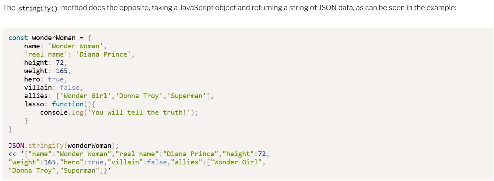
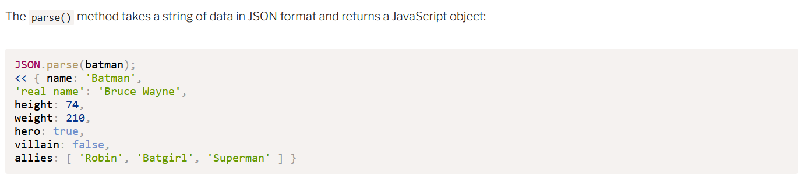

This passage of code demonstrates how to convert JSON to String.

This section of code shows how to convert srings to JSON.
One question: the textbook mentions and brother Thayne you mentioned a lot about "Call-back function". Could you explain more about it?